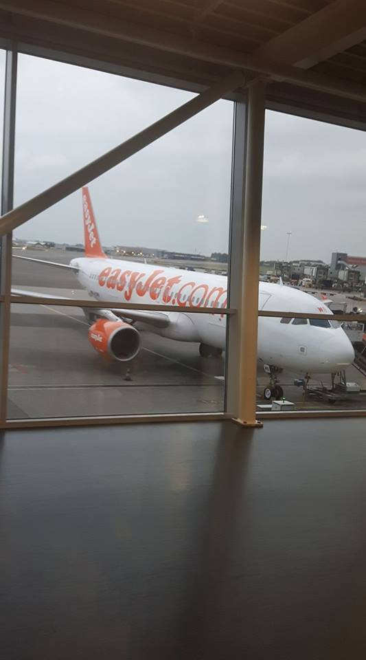

General information
Majorca, also spelt Mallorca, is the largest island in the Balearic Islands, which are part of Spain and located in the Mediterranean.
The capital of the island, Palma, is also the capital of the autonomous community of the Balearic Islands. The Balearic Islands have been an autonomous region of Spain since 1983.[4] The Cabrera Archipelago is administratively grouped with Majorca (in the municipality of Palma). The anthem of Majorca is La Balanguera.
Like the other Balearic Islands of Menorca, Ibiza and Formentera, the island is an extremely popular holiday destination, particularly for tourists from Germany and the United Kingdom. The international airport, Palma de Mallorca Airport, is one of the busiest in Spain; it was used by 26.3 million passengers in 2016.[5]
The name derives from Latin insula maior, "larger island"; later Maiorica, "the larger one" in comparison to Menorca, "the smaller one".
Party-Island Majorca
Majorca is famous for having visitors like Mike van Niks that come to the Island, drink and do stuff anywhere in El Arenal, before leaving the Island four pounds lighter in bodyweight.

About El Arenal
El Arenal is a high-octane holiday resort situated on the south coast of Mallorca on the eastern end of the six kilometer long ‘Playa de Palma’. Only five kilometres from the airport of Son Sant Joan and 10 kilometres east of the city of Palma de Mallorca, there is no better location for making the most of every minute of your holiday.
History
El Arenal was first populated by sandstone workers at the end of the 19th century who migrated from the inland city of Llucmajor. The first hotel was built in 1914 called the ‘Hotel Terminus’ and the town was also served by a small fishing dock. The resort later blossomed in the 1950s and now merges completely with neighbouring coastal resorts.
Today Arenal attracts many visitors in search of a beach, bar and clubbing style holiday, especially young 18-30 year old German internationals. Although not as notorious as Magaluf, Arenal can be noisy and rowdy. This makes it an ideal location if you want buzz and lots of things to do all day and night, but not the best choice if you are in search of peace and quiet.